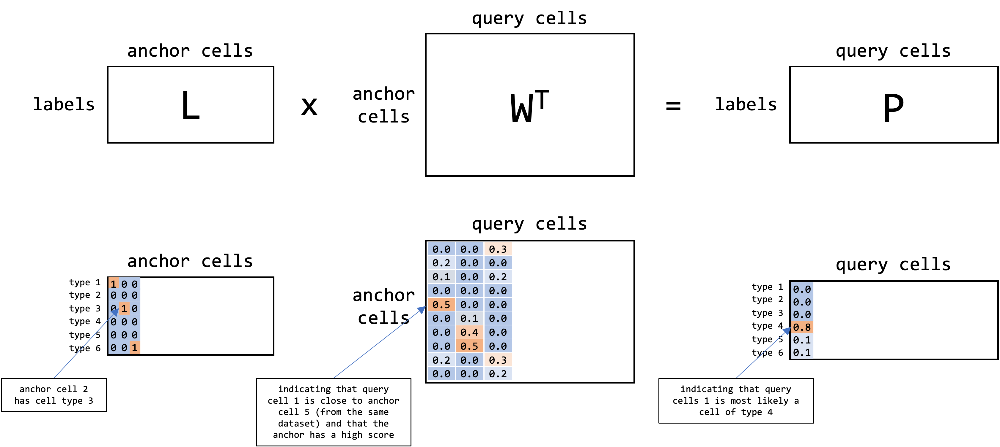

Integration via CCA
Philipp SL Schäfer
2022-04-10-08-57
suppressPackageStartupMessages({
library(tidyverse)
library(ComplexHeatmap)
library(grid)
library(gridExtra)
library(CCA)
library(GGally)
})
Sys.setenv(RETICULATE_PYTHON =
"/home/pschaefer/miniconda3/envs/r-reticulate/bin/python")Status
Work in progress.
Introduction
To understand the integration of single-cells via canonical correlation analysis (CCA), we will first focus on applications that are more intuitive to understand
Then, we will have a look at how to solve the CCA objective
Lastly, we will explore how CCA can be used to integrate single cell data.
Resources
Lecture: Data Mining, Spring 2013, by Ryan Tibshirani, lectures 10 - 13 (see here: https://www.stat.cmu.edu/~ryantibs/datamining/)
PhD Thesis: Practical Algorithms for Latent Variable Models by Gregory W. Gundersen (http://gregorygundersen.com/publications/gundersen2021thesis.pdf)
Applied CCA in R: https://stats.oarc.ucla.edu/r/dae/canonical-correlation-analysis/
Paper: A penalized matrix decomposition, with applications to sparse principal components and canonical correlation analysis (1)
Paper: Comprehensive Integration of Single-Cell Data (Seurat V3) (2, 3)
Background & Intuition
Data
We will download the questions that were used for the development of the Multidimensional Introversion-Extraversion Scales (see here: https://openpsychometrics.org/_rawdata).
The test contained 91 questions about the personality of the participants. We remove Q44 which is doubled.
if (!any(str_detect(list.dirs("/mnt/sda/data", recursive = FALSE),
"MIES_Dev_Data$"))) {
downloader::download(
url="https://openpsychometrics.org/_rawdata/MIES_Dev_Data.zip",
dest="/mnt/sda/data/MIES_DATA.zip",
mode="wb")
unzip("/mnt/sda/data/MIES_DATA.zip", exdir = "/mnt/sda/data/")
unlink("/mnt/sda/data/MIES_DATA.zip")
}
mies_data <- read_tsv("/mnt/sda/data/MIES_Dev_Data/data.csv",
show_col_types = FALSE) %>%
dplyr::select(tidyselect::matches("Q[0-9]{1,2}A"))
dim(mies_data)## [1] 7188 91q_raw <- read_lines("/mnt/sda/data/MIES_Dev_Data/codebook.txt") %>%
`[`(., 10:100)
questions <- tibble::tibble(
q = paste0(str_extract(q_raw, "Q[0-9]{1,2}"), "A"),
text = str_extract(q_raw, '(?<=: ").+\\.')
)
#questions %>%
# filter(q %in% c("Q5A", "Q44A"))
questions <- questions %>% dplyr::filter(q != "Q44A")
q_cleaned <- mies_data[,1:91 != 44]
questionsFor the sake of this tutorial we will randomly split the test into test A with the first 40 questions and test B with the last 50 questions.
test_A <- q_cleaned[,1:40]
test_B <- q_cleaned[,41:90]So after all we have two datasets \(X\) and \(Y\):
\(X \in \mathbb{R}^{N \times M}\) with persons/observation \(g = 1,...N\) (here: \(N=7188\)) and questions \(Q^A_c\) with \(c=1,...,M\)
\(Y \in \mathbb{R}^{N \times P}\) with persons/observation \(g = 1,...N\) (here: \(N=7188\)) and questions \(Q^B_d\) with \(d=1,...,P\)
CCA Objective
Our goal is to find linear combinations of the columns of the questions scores from test A and the question scores from test B, such that the resulting vectors of length \(N\) are maximally correlated.
In mathematical terms we seek to find the canonical correlation vectors \(\hat{h_X}\) and \(\hat{h_Y}\) such that \(X \hat{h_X}\) and \(Y \hat{h_Y}\) are maximally correlated.
\[ \hat{h_X}, \hat{h_Y} = \arg\max_{h_X, h_Y} corr(X h_X, Y h_Y) \]
Thus, questions that get a high loading in \(\hat{h_X}\) and questions that get a high loading in \(\hat{h_Y}\) will be similar, meaning they query similar personality traits.
We can find \(min(M,P)\) pairs of canonical correlation vectors as desribed below in the math section.
Question: What is the advantage over performing PCA on the merged matrix \([X,Y]\)?
I think the main advantage is that the principal components of the merged matrix \([X,Y]\) might be dominated by the features from one datasets.
Although I wonder if this is really an issue if I scale the data such that every feature has unit variance.
Results
We will use the CCA package to perform the CCA analysis here.
cca_out <- stats::cancor(test_A, test_B)Looking at the distribution of the correlation coefficients.
ggplot() +
geom_point(aes(x=1:length(cca_out$cor), y=cca_out$cor)) +
labs(y = "Correlation Coefficient", x = "Index")
1. CC Vector
Checking which questions from A and which questions from B got a high loading in the first canonical correlation vector.
qa <- questions %>%
left_join(tibble(q=names(cca_out$xcoef[,1]), xcoef1=cca_out$xcoef[,1],
xcoef2=cca_out$xcoef[,2], xcoef3=cca_out$xcoef[,3]),
by="q") %>%
left_join(tibble(q=names(cca_out$ycoef[,1]), ycoef1=cca_out$ycoef[,1],
ycoef2=cca_out$ycoef[,2], ycoef3=cca_out$ycoef[,3]),
by="q")
top_x <- 3Top questions from test A:
qa %>% slice_max(order_by=xcoef1, n=top_x) %>% pull(text)## [1] "I reveal little about myself."
## [2] "I mostly listen to people in conversations."
## [3] "I am not much of a flirt."Top questions from test B:
qa %>% slice_max(order_by=ycoef1, n=top_x) %>% pull(text)## [1] "I don't talk a lot." "I keep in the background."
## [3] "I am quiet around strangers."Also looking at the questions in B with the most negative loading.
qa %>% slice_min(order_by=ycoef1, n=top_x) %>% pull(text)## [1] "I start conversations."
## [2] "I talk to a lot of different people at parties."
## [3] "I don't mind being the center of attention."We can also compare the results if we were to perform linear regression for “Q13A” (“I can keep a conversation going with anyone about anything”) using the answers to all questions from test B as predictor.
lm_res <- lm(cbind(test_A[,"Q13A"], test_B), formula = Q13A ~ .)Again looking at the questions with the most positive coefficient.
qa %>%
dplyr::filter(q %in% (lm_res$coefficients %>% sort(decreasing=T) %>% `[`(., 1:top_x) %>% names)) %>%
dplyr::pull(text)## [1] "I am never at a loss for words." "I make people feel at ease."
## [3] "I start conversations."And at the questions with the most negative coefficient.
qa %>%
dplyr::filter(q %in% (lm_res$coefficients %>% sort(decreasing=F) %>% `[`(., 1:top_x) %>% names)) %>%
dplyr::pull(text)## [1] "I am quiet around strangers." "I don't talk a lot."
## [3] "I have little to say."2. CC Vector
qa %>% slice_max(order_by=xcoef2, n=top_x) %>% pull(text)## [1] "I reveal little about myself."
## [2] "I am brave."
## [3] "I would have to be lost for a very long time before asking help."qa %>% slice_max(order_by=ycoef2, n=top_x) %>% pull(text)## [1] "I never tell people the important things about myself."
## [2] "I am able to stand up for myself."
## [3] "I don't talk a lot."3. CC Vector
qa %>% slice_max(order_by=xcoef3, n=top_x) %>% pull(text)## [1] "I am good at making impromptu speeches."
## [2] "I have a strong personality."
## [3] "I can keep a conversation going with anyone about anything."qa %>% slice_max(order_by=ycoef3, n=top_x) %>% pull(text)## [1] "I am never at a loss for words." "I hate people."
## [3] "I do not care about sports."Math
Given \(X \in \mathbb{R}^{N \times M}\) with observations \(g = 1,...N\) and features \(Q^A_c\) with \(c=1,...,M\)
And \(Y \in \mathbb{R}^{N \times P}\) with the same observations \(g = 1,...N\) and different features \(Q^B_d\) with \(d=1,...,P\)
We seek to find \(\hat{h_X}\) and \(\hat{h_Y}\) (for now only first pair of canonical correlation vectors)
\[ \begin{align*} \hat{h_X}, \hat{h_Y} &= \arg\max_{h_X, h_Y} corr(X h_X, Y h_Y) \\ &= \arg\max_{h_X, h_Y} \frac{Cov(X h_X, Y h_Y)}{\sqrt{V(X h_X)} \sqrt{V(Y h_Y)}} \end{align*} \]
We call \(z_X = X h_X\) and \(z_Y = Y h_Y\) the first pair of canonical variables.
We will columns of \(X\) and \(Y\) are centered (so the mean for each feature is 0)
\[ \mathbb{E}[X_{:,c}] = 0 \quad \forall c=1,...,M \]
- Thus allows us to rewrite the correlation using inner products (or more specifically the dot product). Also not that this holds true because if \(X, Y\) are centered, \(z_X, z_Y\) will be centered.
\[ \begin{align*} corr(x,y) &= \frac{Cov(x,y)}{\sqrt{V(x)} \sqrt{V(y)}} \\ &= \frac{\frac{1}{N} \sum_{i=1}^N(x_i-\bar{x})(y_i-\bar{y})^T}{\sqrt{\frac{1}{N} \sum_{i=1}^N(x_i-\bar{x})(x_i-\bar{x})^T} \sqrt{\frac{1}{N} \sum_{i=1}^N(y_i-\bar{y})(y_i-\bar{y})^T}} \\ &= \frac{\sum_{i=1}^Nx_i y_i^T}{\sqrt{ \sum_{i=1}^Nx_i x_i^T} \sqrt{ \sum_{i=1}^Nxy_i y_i^T}} \\ &= \frac{x^Ty}{\sqrt{x^Tx}\sqrt{y^Ty}} \\ &= \frac{\langle x,y \rangle}{\|x\|\|y\|} \end{align*} \]
- Thus we can rewrite the above equation:
\[ \begin{align*} \hat{h_X}, \hat{h_Y} &= \arg\max_{h_X, h_Y} \frac{Cov(X h_X, Y h_Y)}{\sqrt{V(X h_X)} \sqrt{V(Y h_Y)}} \\ &= \arg\max_{h_X, h_Y} \frac{(Xh_x)^T(Yh_y)}{\sqrt{(Xh_x)^T(Xh_x)}\sqrt{(Yh_y)^T(Yh_y)}} \\ &= \arg\max_{h_X, h_Y} \frac{(Xh_x)^T(Yh_y)}{\|Xh_x\|_2\|Yh_y\|_2} \end{align*} \]
- Since the correlation is scale invariant, we constrain the solution using
\[ \begin{align*} \hat{h_X}, \hat{h_Y} &= \arg\max_{h_X, h_Y} (Xh_x)^T(Yh_y) \quad s.t. \; \|Xh_x\|_2=1, \; \|Yh_y\|_2 = 1 \end{align*} \]
- The above equation holds true for the first pair of canonical vectors, but for the subsequent pairs, we require that the \(k\)’th canonical variables \(Xh_x^{(k)}= z_x^{(k)} \in \mathbb{R}^N\), \(Yh_y^{(k)}= z_y^{(k)} \in \mathbb{R}^N\) are orthogonal to all \((k-1)\) pairs. This ensures that the canonical variables capture different axes of covariation.
\[ \begin{align*} \hat{h_X}^{(k)}, \hat{h_Y}^{(k)} = \arg\max_{h_X, h_Y} (Xh_x)^T(Yh_y) \quad s.t. & \; \|Xh_x\|_2=1, \; \|Yh_y\|_2 = 1 \\ & (Xh_X^{(k)})^T(Xh_X^{(j)}) = 0 \; \forall \; j=1,...,k-1 \\ & (Yh_Y^{(k)})^T(Yh_Y^{(j)}) = 0 \; \forall \; j=1,...,k-1 \end{align*} \]
- Given that \(N \geq M\) and \(N \geq P\), the total number of canonical directions (pairs of canonical vectors) is limited by the rank of \(X\) of \(Y\), we define the maximum number of directions as
\[ R = \min\{ rk(X), rk(Y) \} \]
To solve the objective we transform the problem by "sphering of the centered matrices \(X \in \mathbb{R}^{N \times M}\) and \(Y \in \mathbb{R}^{N \times P}\). Therefore, we first introduce the scatter matrices \(S_X = X^TX\), \(S_Y = Y^T Y\).
Assuming that \(rk(X) = M\) and \(rk(Y) = P\), \(S_X\), \(S_Y\) are symmetric, positivie (semi)-definite, and thus we can factorize them into the non-negative square roots (similar to the cholesky decomposition):
\[ S_X = S_X^{1/2} S_X^{1/2}, \quad S_Y = S_Y^{1/2} S_Y^{1/2} \]
- Now we can “sphere” our matrices \(X\) and \(Y\) via
\[ \tilde{X} = X S_X^{-1/2}, \tilde{Y} = Y S_Y^{-1/2} \]
- This is called “sphering” because the covariance of \(\tilde{X}\) and \(\tilde{Y}\) are scaled identity matrices (assuming that \(\tilde{X}\) is still centered):
\[ \begin{align*} cov(\tilde{X}) &= cov(X S_X^{-1/2}) \\ &= \frac{1}{N}(X S_X^{-1/2})^T(X S_X^{-1/2}) \\ &= \frac{1}{N} (S_X^{-1/2})^T X^T X S_X^{-1/2} \\ &= \frac{1}{N} S_X^{-1/2} S_X S_X^{-1/2} \\ &= \frac{1}{N} I \end{align*} \]
- The objective (for the first pair of canonical vectors) becomes:
\[ \begin{align*} \tilde{\hat{h_X}}, \tilde{\hat{h_Y}} &= \arg\max_{\tilde{h_X}, \tilde{h_Y}} (\tilde{X} \tilde{h_X})^T(\tilde{Y} \tilde{h_Y}) \quad s.t. & \; \|\tilde{X} \tilde{h_X}\|_2=1, \; \|\tilde{Y} \tilde{h_Y}\|_2 = 1 \end{align*} \]
- where \(h_X\) and \(h_Y\) can be transformed back via
\[ h_X = S_X^{-1/2}\tilde{h_X}, \quad h_Y = S_Y^{-1/2}\tilde{h_Y} \]
- Additionally, we can simplify the above formula using
\[ \begin{align*} \|\tilde{X} \tilde{h_X}\|_2 &= \sqrt{ (\tilde{X} \tilde{h_X})^T(\tilde{X} \tilde{h_X})} \\ &= \sqrt{ \tilde{h_X}^T \tilde{X}^T \tilde{X} \tilde{h_X}} \\ &= \sqrt{ \tilde{h_X}^T S_X^{-1/2} X^T X S_X^{-1/2} \tilde{h_X}} \\ &= \sqrt{\tilde{h_X}^T \tilde{h_X}} \\ &= \| \tilde{h_X} \|_2 \end{align*} \]
- Thus, we get the new objective
\[ \begin{align*} \tilde{\hat{h_X}}, \tilde{\hat{h_Y}} &= \arg\max_{\tilde{h_X}, \tilde{h_Y}} (\tilde{X} \tilde{h_X})^T(\tilde{Y} \tilde{h_Y}) \quad s.t. & \; \|\tilde{h_X}\|_2=1, \; \|\tilde{h_Y}\|_2 = 1 \\ &= \arg\max_{\tilde{h_X}, \tilde{h_Y}} \tilde{h_X}^T \tilde{X}^T \tilde{Y} \tilde{h_Y} \quad s.t. & \; \|\tilde{h_X}\|_2=1, \; \|\tilde{h_Y}\|_2 = 1 \\ \end{align*} \]
- We can solve this transformed objective via SVD of \(K = \tilde{X}^T \tilde{Y} \in \mathbb{R}^{M \times P}\) (using the full SVD here, we get):
\[ \tilde{X}^T \tilde{Y} = U \Sigma V^T \quad \text{with} \quad U \in \mathbb{R}^{M \times M}, \Sigma \in \mathbb{R}^{M \times P}, V \in \mathbb{R}^{P \times P} \]
- \(U\), \(V\) are orthogonal, meaning it’s columns (\(u_i\), \(v_i\)) are orthonormal:
\[ \begin{aligned} & u_i^T u_j = 0 \quad \text {for } i \neq j \\ & u_i^T u_i = 1 \end{aligned} \]
\(\Sigma\) contains the singular values in sorted order on its diagonal such that \(\sigma_1 > \sigma_2 > ... > \sigma_R\).
Given that \(h_X = S_X^{-1/2}\tilde{h_X}\), \(h_Y = S_Y^{-1/2}\tilde{h_Y}\) and \(\tilde{h_X} = u_i\), \(\tilde{h_Y} = v_i\), the canonical vectors are given by
\[ h_X^{(i)} = S_X^{-1/2} \tilde{h_X^{(i)}} = S_X^{-1/2} u_i \quad \text{for } i=1,...,R \\ h_Y^{(i)} = S_X^{-1/2} \tilde{h_Y^{(i)}} = S_Y^{-1/2} v_i \quad \text{for } i=1,...,R \]
- The canonical correlations corresponds to
\[ \rho^{(i)} = \sigma_i \quad \text{for } i=1,...,R \]
- Looking at the original objective
\[ \begin{align*} \hat{h_X}^{(k)}, \hat{h_Y}^{(k)} = \arg\max_{h_X, h_Y} (Xh_x)^T(Yh_y) \quad s.t. & \; \|Xh_x\|_2=1, \; \|Yh_y\|_2 = 1 \\ & (Xh_X^{(k)})^T(Xh_X^{(j)}) = 0 \; \forall \; j=1,...,k-1 \\ & (Yh_Y^{(k)})^T(Yh_Y^{(j)}) = 0 \; \forall \; j=1,...,k-1 \end{align*} \]
- We can validate that the constrains are fulfilled (the canonical variables \(z_X^{(i)}\), \(z_X^{(j)}\) are orthonormal, because \(v_i\), \(v_j\) are orthonormal by construction of the SVD).
\[ \begin{align*} (z_X^{(i)})^T z_X^{(j)} &= (Xh_X^{(i)})^T (Xh_X^{(j)}) \\ &= (h_X^{(i)})^T X^T X h_X^{(j)} \\ &= (S_X^{-1/2} \tilde{h_X^{(i)}})^T S_X ( S_X^{-1/2} \tilde{h_X^{(j)}}) \\ &= (\tilde{h_X^{(i)}})^T S_X^{-1/2} S_X S_X^{-1/2} \tilde{h_X^{(j)}} \\ &= (\tilde{h_X^{(i)}})^T \tilde{h_X^{(j)}} \\ &= v_i^T v_j \end{align*} \]
Own Implementation
X <- as.matrix(test_A)
Y <- as.matrix(test_B)
compute_cca <- function(X, Y, scale=FALSE) {
R = min(ncol(X), ncol(Y))
# centering and scaling
X_centered <- t( t(X) - Matrix::colMeans(X) )
Y_centered <- t( t(Y) - Matrix::colMeans(Y) )
if (scale) {
X_centered <- t( t(X_centered) / matrixStats::colSds(X_centered) )
Y_centered <- t( t(Y_centered) / matrixStats::colSds(Y_centered) )
}
# get the scatter matrix
Sx <- t(X_centered) %*% X_centered
Sy <- t(Y_centered) %*% Y_centered
# factorize into square root spd matrices
Sx_eigen <- eigen(Sx)
Sx_sqrt <- Sx_eigen$vectors %*% diag(sqrt(Sx_eigen$values)) %*%
solve(Sx_eigen$vectors)
Sy_eigen <- eigen(Sy)
Sy_sqrt <- Sy_eigen$vectors %*% diag(sqrt(Sy_eigen$values)) %*%
solve(Sy_eigen$vectors)
stopifnot(all(dplyr::near(Sx_sqrt %*% Sx_sqrt, Sx)))
stopifnot(all(dplyr::near(Sy_sqrt %*% Sy_sqrt, Sy)))
# compute the inverse
Sx_sqrt_inv <- solve(Sx_sqrt)
Sy_sqrt_inv <- solve(Sy_sqrt)
# compute K and its singular value decomposition
K = t(X_centered%*%Sx_sqrt_inv) %*% (Y_centered%*%Sy_sqrt_inv)
svd_res <- svd(K, nu = ncol(X), nv = ncol(Y))
# get the left and right canonical vectors
hxs <- Sx_sqrt_inv %*% svd_res$u
hys <- Sy_sqrt_inv %*% svd_res$v
# compute the left and right canonical variables
zxs <- X_centered %*% hxs
zys <- Y_centered %*% hys
# check that the canonical variables are orthonormal
stopifnot(
all(dplyr::near(t(zxs[,1]) %*% zxs[,2], 0),
dplyr::near(t(zys[,1]) %*% zys[,2], 0))
)
# check that the correlations and the singular values corresponds
stopifnot(
dplyr::near(purrr::map_dbl(1:ncol(zxs), ~ stats::cor(zxs[,.x], zys[,.x])),
svd_res$d)
)
return(list(cor = svd_res$d, xcoef = hxs, ycoef = hys, R = R))
}Testing and comparing the function. For the proper canonical variables, the results are the same.
test <- compute_cca(as.matrix(test_A), as.matrix(test_B))
all(dplyr::near(test$cor, cca_out$cor))## [1] TRUEall(dplyr::near(abs(test$xcoef[,1:test$R]), abs(cca_out$xcoef[,1:test$R])))## [1] TRUEall(dplyr::near(abs(test$ycoef[,1:test$R]), abs(cca_out$ycoef[,1:test$R])))## [1] TRUEApplication to Single-Cell Data
Data
We focus here on the implementation by Seurat. (2, 3)
Our input are the reference snRNA-seq dataset \(X\) and the query snATAC-seq dataset \(Y\). For integration we only use the selected features, namely the union of the most highly variable features from each dataset as determined by the vst-method. (say we have about 4500 features).
So we should note that the features for the snATAC-seq data are not the actual gene expression values but rather gene scores which are computed in ArchR by summing up the number of Tn5 insertion in and in proximity to a given gene body weighted by the inverse distance to that particular gene. (also per default ArchR arguments, we are also not using the raw gene scores but rather smoothed gene scores based on MAGIC (Markov Affinity-based Graph Imputation of Cells))
For the notation below we will say that we have \(g = 1,...,N\) features and \(X\) has \(m=1,...,M\) cells whereas \(Y\) has \(p=1,...,P\) cells such that: \(X \in \mathbb{R}^{N \times M}\) and \(Y \in \mathbb{R}^{N \times P}\).
CCA Embedding
We can use CCA to compute a common low-dimensional embedding (Seurat::RunCCA), which is used to find pairs of cells (“TransferAnchors”) from each dataset that are similar.
So we essentially do the same as shown above and use the loadings in the canonical correlation vectors as coordinates for the cells. So the cells lay in a space with as many dimensions as pairs of canonical correlation vectors we computed.
However, we have to account for the fact that usually we have many more cells than features \(N << (M+P)\). Therefore, the Seurat authors opted to use “diagonal penalized CCA,” where the covariance matrices are treated as diagonal matrices (setting all off-diagonal terms to 0) (What does this essentially do? Why does it help?). (1)
Further, not the full SVD is computed but rather k singular vectors and values are approximated using the augmented implicitly restarted Lanczos bidiagonalization algorithm which is implemented in irlba.
Before proceeding we need to control for global differences in scale (what exactly does that mean?).
Previously in Butler et al. (2018) (2), the pairs of canonical vectors \(h_{X}^{(i)}\) and \(h_{Y}^{(i)}\) we aligned by computing a metagene using a linear combination of the 30 genes with the highest biweight midcorrelation (bicor) to \(h_{X}^{(i)}\) and \(h_{Y}^{(i)}\). Now have each cell in \(X\) and \(Y\) laying in a 30-dimensional space defined by the metagene. Lastly, to align the cells dynamic time warping (DTW) is used, which places a cell as close as possible to the most similar cell in the other dataset while maintaining the relative ordering of the cells. Now the same dynamic time warping is applied to the canonical correlation vectors leading a common aligned scale. This procedure is applied to all canonical vectors \(h_{X}^{(i)}\) and \(h_{Y}^{(i)}\) with \(i=1,...,k\).
However, in Stuart et al. (2019) (3) the procedure was simplified. To correct for global difference in scale between the two different datasets L2 normalization is used on the cell embeddings. Assuming that \(A_i\) is the the coordinate vector for a cell \(i\) such that \(|A| = k\), we normalize the coordinates using:
\[ \hat{A} = \frac{A}{|A|_2} \]
Transfer Anchors
In our common CCA embedding we search for mutual nearest neighbors, e.g. assuming k.anchor=10, cell A and cell B are MNNs if cell A is among the 10 nearest neighbors of cell B, and cell B is among the 10 nearest neighbors of cell A. We call these pairs of cell TransferAnchors.
So in the example below A and B are MNN. B is the closest cell for C, but the are not MNN (here assuming that k.anchor=1)
suppressPackageStartupMessages(library(tidyverse))
tibble::tribble(
~x, ~y, ~name,
6, 7, "A",
7, 4, "B",
2, 2, "C",
) %>%
ggplot() +
geom_point(aes(x=x, y=y, color=name), size=10) +
lims(x=c(0,10), y=c(0,10)) +
labs(color="Cell")
After finding these integration anchors in the low-dimensional space, they are filtered based on the high-dimensional original space. In particular the 200 (max.features = 200) most informative features for the CCA (i.e. features with the highest loading) are used for filtering. So for each query cell of an anchor cell pair the corresponding reference cell must be among the 200 (k.filter = 200) nearest neighbors in this “high-dimensional space.”
After filtering the integration anchors are scored based on the overlap on their neighborhood. In particular for both the reference and the query cell the 30 (k.score = 30) nearest neighbors are determined in the same dataset (within-dataset neighbors) and the other-dataset using the low-dimensional embedding. Thus, we have 4 matrices, namely a) the NN of the reference cell from the reference dataset, b) the NN of the reference cell from the query dataset, c) the NN of the query cell from the reference datset, d) the NN of the query cell from the query dataset. Now we determine the overlap between a) and c), as well as b) and d). We combine the overlap measures and call it the score (“how big is the overlap of the neighborhoods”). Furthermore, the effect of outliers is reduced by using the 0.01 and 0.9 quantiles to rescale the anchor scores to a range of 0 to 1.
Transfer Data
Weight Matrix
Then we can use the TransferData function from Seurat to for example impute the RNA-PCA coordinates in the ATAC-seq data. But how exactly does this work?
Having the anchor cell pairs, we construct a weight matrix \(W\) which described the association between each query cell \(c\) and each anchor pair \(i\).
We start by constructing the weighted distance matrix for each query cell \(c\) and each anchor pair \(i\) (meaning the query cell from this cell pair). We use the distance to the k.weight nearest anchor query cell as well as the anchor score \(S_i\) to weight all the distances.
\[ D_{c, i}=\left(1-\frac{\operatorname{dist}\left(c, a_{i}\right)}{\operatorname{dist}\left(c, a_{k . w e i g h t}\right)}\right) S_{a_{i}} \]
Assuming we have the weight matrix, we continue by applying a Gaussian kernel. So the weights decay according to a “Gaussian Curve” with increasing distance.
\[ \tilde{D}_{c, i}=1-\mathrm{e}^{\frac{-D_{c, i}}{(2 / s d)^{2}}} \]
where sd is the Gaussian kernel bandwidth, set to 1 by default. Finally, we normalize across all k.weight anchors:
\[ W_{c, i}=\frac{\tilde{D}_{c, i}}{\sum_{1}^{j=k . \text { weight }} \tilde{D}_{c, j}} \]
Discrete Data
For cell metadata transfer, we create a binary classification matrix \(L\) containing the classification information for each anchor cell in the reference dataset. Specifically, each row in \(L\) corresponds to a possible class and each column corresponds to a reference anchor.
If the reference cell in the anchor belongs to the corresponding class, that entry in the matrix is filled with a \(1\), otherwise the entry is assigned a \(0\).
We then compute label predictions, \(P_{l}\), by multiplying the anchor classification matrix \(L\) with the transpose of the weights matrix \(W\) :
\[ P_{l}=L W^{T} \]
This returns a prediction score for each class for every cell in the query dataset that ranges from 0 to 1 , and sums to \(1\).
Continuous Data
Our procedure for transferring continuous data is closely related to discrete label transfer.
We compute new feature expression predictions, \(P_{f}\), by multiplying a matrix of anchor features to be transferred, \(F\), with the transpose of the weights matrix \(W\):
\[ P_{f}=F W^{T} \]
In words: For a given query cell \(c\) we get a the sum of the classes of their closest anchor cells weighted by the distance and the score of that anchor pair.

This returns a predicted expression matrix for each feature (row) in \(F\) for each cell in the query dataset.
Toy Dataset
For illustration purposes, we will create a much smaller mock example.
For now I simply created the gene expression matrix \(X\) by sampling from 0:5 with decreasing probabilities. The same is done for the gene score matrix \(Y\) with the addition that some cells are simply taken from \(X\). These should be our integration anchors in the end
It would be fun to actually simulate some kind of latent space which we use to create the matrices in some kind of generative process.
set.seed(42)
get_count_matrix <- function(ngenes, ncells, cell_prefix="c") {
mtx <- matrix(sample(x=0:5, prob=c(0.5, 0.2, 0.1, 0.1, 0.05, 0.05),
size=ngenes*ncells, replace = TRUE),
nrow = ngenes, ncol = ncells)
rownames(mtx) <- paste0("gene_", 1:nrow(mtx))
colnames(mtx) <- paste0(cell_prefix, "_", 1:ncol(mtx))
return(mtx)
}
X <- get_count_matrix(6, 10, cell_prefix="c")
Y <- get_count_matrix(6, 6, cell_prefix="d") %>%
cbind(X[, sample(x=1:ncol(X), size=3, replace=TRUE)]) %>%
.[, sample(1:ncol(.))] %>% # shuffle
`colnames<-`(., paste0("d_", 1:ncol(.))) # set colnames
p1 <- ComplexHeatmap::pheatmap(
X,
cluster_rows = F, cluster_cols = F,
display_numbers = T,
fontsize_number = 12,
column_names_side = c("top"),
row_names_side = c("left"),
angle_col = c("0"),
circlize::colorRamp2(c(min(X), max(X)), c("yellow", "darkorange"), transparency = 0.5),
column_title = "Gene Expression Matrix X",
heatmap_legend_param = list(title = "Count"),
legend = FALSE,
number_format = "%.0f"
)p2 <- ComplexHeatmap::pheatmap(
Y,
cluster_rows = F, cluster_cols = F,
display_numbers = T,
fontsize_number = 12,
column_names_side = c("top"),
row_names_side = c("left"),
angle_col = c("0"),
circlize::colorRamp2(c(min(Y), max(Y)), c("yellow", "darkorange"), transparency = 0.5),
column_title = "Gene Score Matrix Y",
heatmap_legend_param = list(title = "Count"),
legend = FALSE,
number_format = "%.0f"
)grid.newpage()
pushViewport(viewport(layout = grid.layout(nr = 1, nc = 2)))
pushViewport(viewport(layout.pos.row = 1, layout.pos.col = 1))
draw(p1, newpage = FALSE)
upViewport()
pushViewport(viewport(layout.pos.row = 1, layout.pos.col = 2))
draw(p2, newpage = FALSE)
upViewport()By inspection we can find the cells in Y that were actually taken from X. We aim to find those cells in both datasets that correspond to each other, i.e. that are highly similar.
Next we will center and scale the data and then compute the SVD.
X_centered <- t( t(X) - Matrix::colMeans(X))
Y_centered <- t( t(Y) - Matrix::colMeans(Y))
X_scaled <- t(t(X_centered) / matrixStats::colSds(X_centered))
Y_scaled <- t(t(Y_centered) / matrixStats::colSds(Y_centered))
K = t(X_scaled) %*% Y_scaled
svd_res <- svd(K)
hx <- svd_res$u[,1:3] %>%
`rownames<-`(.,paste0("c_", 1:nrow(.))) %>%
`colnames<-`(.,paste0("u_", 1:ncol(.)))
hy <- svd_res$v[,1:3] %>%
`rownames<-`(.,paste0("d_", 1:nrow(.))) %>%
`colnames<-`(.,paste0("v_", 1:ncol(.)))
p1 <- ComplexHeatmap::pheatmap(
hx,
cluster_rows = F, cluster_cols = F,
display_numbers = T,
fontsize_number = 12,
column_names_side = c("top"),
row_names_side = c("left"),
angle_col = c("0"),
circlize::colorRamp2(c(min(hx), max(hx)),
c("blue", "yellow"), transparency = 0.5),
column_title = "Left Canonical Vector h_X",
legend = FALSE,
number_format = "%.1f"
)p2 <- ComplexHeatmap::pheatmap(
hy,
cluster_rows = F, cluster_cols = F,
display_numbers = T,
fontsize_number = 12,
column_names_side = c("top"),
row_names_side = c("left"),
angle_col = c("0"),
circlize::colorRamp2(c(min(hy), max(hy)),
c("blue", "yellow"), transparency = 0.5),
column_title = "Right Canonical Vector h_Y",
legend = FALSE,
number_format = "%.1f"
)
grid.newpage()
pushViewport(viewport(layout = grid.layout(nr = 1, nc = 2)))
pushViewport(viewport(layout.pos.row = 1, layout.pos.col = 1))
draw(p1, newpage = FALSE)
upViewport()
pushViewport(viewport(layout.pos.row = 1, layout.pos.col = 2))
draw(p2, newpage = FALSE)
upViewport()Here are scatter plots of \(z_X\) and \(z_Y\):
zx <- X %*% hx
zy <- Y %*% hy
cbind(zx, zy) %>%
as.data.frame() %>%
rownames_to_column(var="gene") %>%
pivot_longer(cols=!gene) %>%
mutate(name = str_replace(name, "u", "zx"),
name = str_replace(name, "v", "zy")) %>%
mutate(comp = str_extract(name, "[0-9]$"),
comp = paste("Canonical Pair", comp)) %>%
mutate(coord = ifelse(str_starts(name, "zx"), "x", "y")) %>%
dplyr::select(-name) %>%
pivot_wider(names_from = coord, values_from = value) %>%
ggplot() +
geom_point(aes(x=x, y=y)) +
facet_wrap(~comp, scales = "free") +
labs(x = "z_X", y = "z_Y")Questions
What is the effect of different proportions of cell types?
What is the difference to simply computing the PCA on the concatenated matrices?